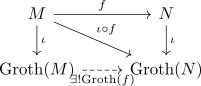

grothendieck group functor
Definition / Proposition
Gvien Category CMon and Category Ab, the grothendieck monoid functor is defined as functor
\begin{align*}
\mathrm{Grothen}: \mathrm{CMon} \rightarrow& \mathrm{Ab} \\
M \mapsto& \mathrm{Groth}(M) \\
(f: M \rightarrow N) \mapsto& (\mathrm{Groth}(f): \mathrm{Groth}(M) \rightarrow \mathrm{Groth}(N))
\end{align*}
where $\mathrm{Groth}(M)$ is the grothendieck group and $\mathrm{Groth}(f)$ is the induced morphism
